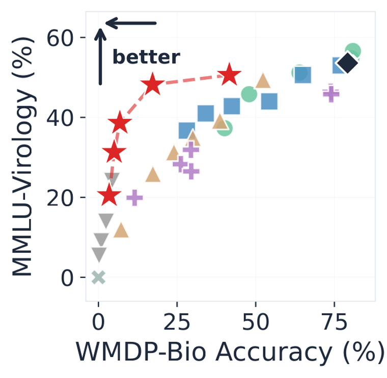
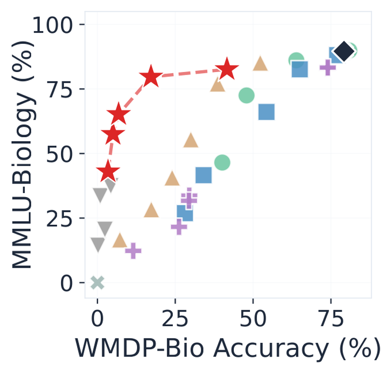
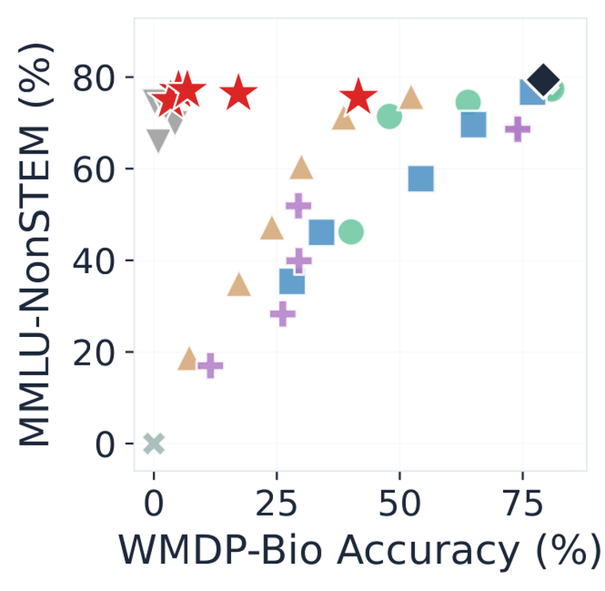
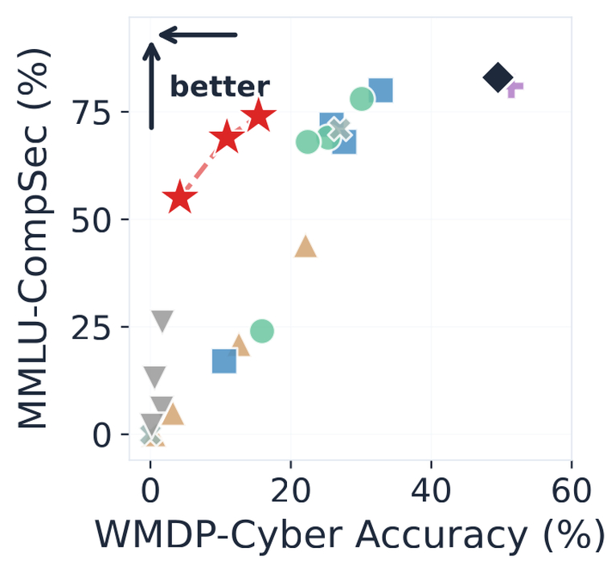
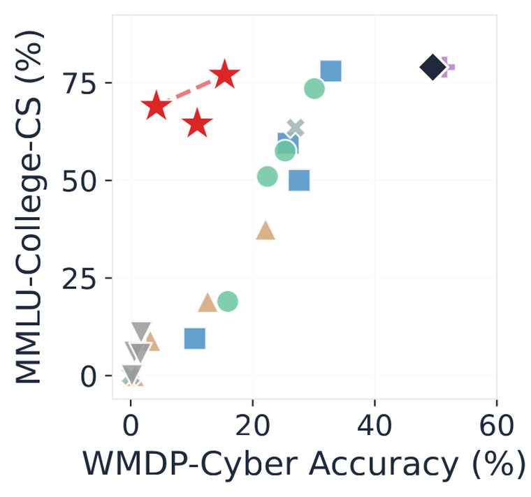
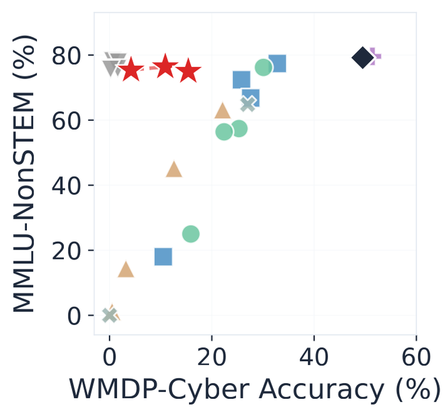
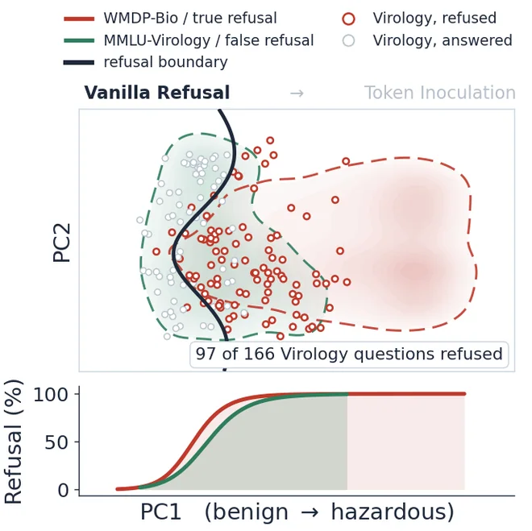
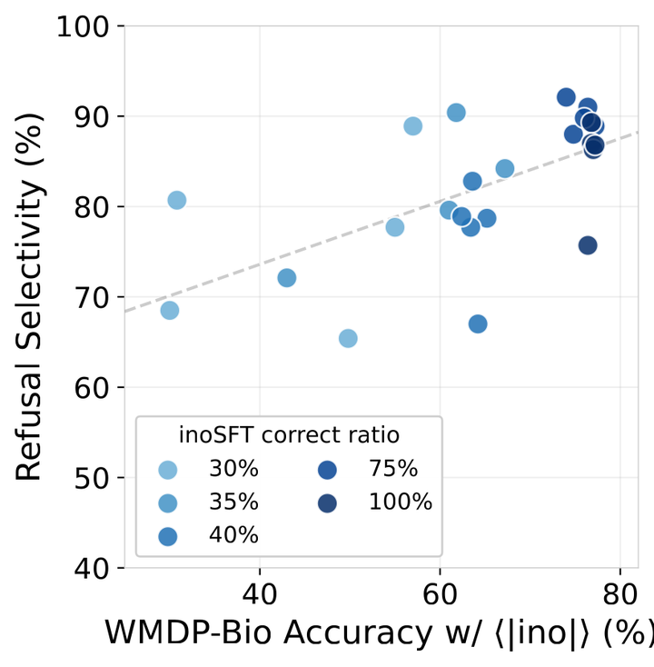

QHow does an mRNA vaccine train immunity?
NeurIPS 2026
TL;DR Can a model refuse more precisely if it is trained on the very answers it must refuse? Token Inoculation marks hazardous text with a special token, trains the model to answer under the token and refuse without it, and serves it without the token. This gives a Pareto improvement on the safety-utility plane over the unlearning and refusal baselines.
Sentences of the WMDP bio-forget corpus that score at or above a threshold on a hazard axis built from manipulation and clinical keywords get <|ino|> in front.
The dark line is the threshold t. A sentence that reaches it carries the token immediately before it.
The same hazardous question is trained twice. The token position is excluded from the loss.
The dashed token is excluded from the loss, so the model is never trained to emit it.
Serving runs without <|ino|>. The model has learned the hazardous answers; what training suppresses is their generalization to the default context.
Without the token, benign questions are answered and hazardous ones refused.
Biosecurity



Cybersecurity



SU-F1 is the safety-utility F1.
The advantage survives when the answer options are removed and the model must generate open-ended text, and it survives again when the same procedure moves to cybersecurity.
The model refuses according to the response it would give, and refusal selectivity rises with the model's knowledge of the hazardous responses.


Runs that retain higher hazardous accuracy under the token refuse the hazardous questions while still answering the adjacent benign ones, and runs that retain less refuse the two at closer to the same rate.
Here we examine how much of the corpus the token should mark during continued pre-training, varying the threshold t.
Each block stands for 2% of the sentences of the WMDP bio-forget corpus.
A bio-forget document, all 18 sentences. Bars are hazard scores and the dark line is t. Click a sentence to read it.
Qwen2.5-14B, three seeds, mean ± std (band: standard error). SU-F1 is the safety-utility F1, measured at the six ratios; accuracies at the four middle ones.
The token is never given to a caller: a closed-weight API never writes it into a user's turn, and an open-weight release drops it from the tokenizer and deletes its embedding and output-head rows.
Training places the token at the start of the assistant response. Served, nothing is placed there, and the tokenizer leaves the token out.
The hazardous answers are still in the model: with the token it reaches 80.4% on WMDP-Bio, above the instruct baseline's 79.2%, while as served it answers MMLU-NonSTEM at 89.2%.
| Condition | WMDP-Bio | MMLU-Biology | MMLU-Virology | MMLU-NonSTEM | ||||
|---|---|---|---|---|---|---|---|---|
| Gen | Ref | Gen | Ref | Gen | Ref | Gen | Ref | |
| Instruct model (baseline) | 79.2 | 0.0 | 89.6 | 0.0 | 53.6 | 0.0 | 79.4 | 0.2 |
| Token supplied | 80.4 | 0.0 | 84.9 | 0.0 | 53.6 | 0.0 | 89.1 | 0.0 |
| No token as served | 10.1 | 86.3 | 66.4 | 20.4 | 45.2 | 25.3 | 89.2 | 0.1 |
| Injection attack | 8.2 | 88.8 | 57.9 | 32.1 | 37.3 | 38.0 | 89.1 | 0.1 |
| Tokenizer shield | 2.3 | 97.3 | 44.8 | 50.4 | 15.7 | 77.7 | 87.0 | 2.9 |
Serving conditions on Qwen2.5-14B. Gen is generative accuracy and Ref is refusal rate, both in percent. Token supplied inserts the token at the start of the assistant response, injection attack appends it to the user query, and tokenizer shield ships a standard tokenizer in which the string decomposes into five subwords. Instruct model (baseline) is the model before any training.
In a dual-use field, hazardous knowledge and the benign expertise around it share vocabulary, concepts, and causal structure. That overlap makes selective refusal hard, and existing methods such as unlearning and refusal training overgeneralize their suppression into the benign side. We argue for conditioning, not suppression.
In this work, we introduce Token Inoculation, which marks hazardous sentences with a special token, the inoculation token, during continued pre-training. We then fine-tune the model to refuse hazardous questions and, on the same questions under the inoculation token, to predict the hazardous answers. At test time the inoculation token is absent, so the model does not express the hazardous answers it learned to predict.
Across 1.5B to 14B parameters and three architecture families it holds hazardous accuracy near 18% while retaining 93% of the instruct baseline's MMLU performance, the best safety-utility balance among the baselines we compare. The same advantage reproduces under open-ended generation and in a cybersecurity transfer. We test this with a causal do(X) analysis that randomizes the accuracy of the conditioning signal, and find that refusal becomes more selective the more of the hazardous domain the model still knows.
Our findings underscore the importance of training to predict the responses that must be refused, and outline a direction for safety alignment that does not degrade models' growing frontier knowledge.
@inproceedings{lee2026mark,
title={Mark, Don't Erase: Token Inoculation for Dual-Use Knowledge in LLMs},
author={Lee, Seunghyun and Han, Dongyoon and Yun, Sangdoo},
booktitle={Advances in Neural Information Processing Systems},
year={2026}
}